NOTE: You are NOT allowed to use the functions from this notbeook in your own project.#

USING GOOGLE COLAB FOR NEURAL NETWORKS/COMPUTER VISION#
From Study Group on: 12/08/20
Author:
James M. Irving, Ph.D.
Google Colab Overview#
Google Colab Quick - Notes
Open the sidebar!
Use
Table of Contentsto Jump between the 3 major sections.Mount your google drive via the
FilesNote: to make a section appear in the Table of Contents, create a NEW text cell for the header only. This will also let you collapse all of the cells in the section to reduce clutter.
Google Colab already has most common python packages.
You can pip install anything by prepending an exclamation point
You can use the
IPython.displayfunctionclear_outputto programmatically clean up the displays from pip installation.
!pip install fsds_100719 !pip install fake_useragent !pip install lxml from IPython.display import clear_output clear_output() %codnda install ....
Using GPUs/TPUs
Runtime > Change Runtime Type > Hardware Acceleration
Run-Before and Run-After
Go to
Runtimeand selectRun beforeto run all cells up to the currently active cellGo to
Runtimeand selectRun afterto run all cells that follow the currently active cell
Cloud Files with Colab
Open .csv’s stored in a github repo directly with Pandas:
Go to the repo on GitHub, click on the csv file, then click on
DownloadorRawwhich will then change to show you the raw text. Copy and paste the link in your address bar (should start with www.rawgithubusercontent).In your notebook, do
df=pd.read_csv(url)to load in the data.
Google Drive: Open sidebar > Files> click Mount Drive
or use this function (also available from file sidebar):
## Mount Google Drive from google.colab import drive drive.mount('/gdrive',force_remount=True)
Then access files by file path like usual.
Dropbox Files: (like images or csv)
Copy and paste the share link.
Change the end of the link from
dl=0todl=1
Note: for some data types (like.sqlite) the only option is to store them in google drive and then mount google drive using the Files tab of the sidebar.
Keyboard Shortcuts
A lot of the keyboard shortcuts for Colab are different.
Auto-Complete is Control+Space
Control+Shift+Space for docstrings.
Most keyboard shortcuts can be changed
go to
Tools>Keyboard Shortcuts
Some of the keyboard shortcuts are the same BUT you first have to type
Command/Cntrl + Mand THEN the keyboard shortcut.e.g.
Cmd/Cntrl+M Ywill change a cell to a code cellCmd/Cntrl+M Mwill change a code cell to a Markdown cell.
GitHub Integration
Open a notebook from github or save to github using
File > Upload NotebookandFile> Save a copy in github, respectivelyNotebooks saved to Github can optionally have a “Open in Colab” link inserted at the top of the notebook.
You can open notebooks contained in GitHub repositories use the File menu.
File>Open>GitHub tab
You can save a copy of notebooks in GitHub repositories
File>Save a copy in GitHub
When you are done working for the day/want to back up the current state of your notebook:
File>Save and Pin RevisionThis will save a revision that you could revert back to later (like a commit)
See the following example notebook from Google:
You cannot easily clone an entire repository.
It is possible, but you have to do it from WITHIN a Colab notebook.
See the following resources for additional info on using Colab + GitHub:
Load in images stored in a GitHub Repo for Markdown cells:
Go to Repo on GitHub.com, click on image file name.
On the next page for the file, there should be a
Downloadbutton. Click this.A new tab should open up with the raw image and the url should now read
raw.githubusercontent.com.Copy this url, it can be used with Markdown cells using img tags.
Consider paying for Colab Pro if you need faster processing and more RAM
Advantages/Disadvantages to Using Google Colab for Computer Vision#
Advantages#
Your notebooks are stored in your Google Drive account and can be run anywhere.
You can use GPUs or TPUs for free with little to no additional effort.
Runtime>Change Runtime type
You are not limited by your local computer’s resources.
You can access files stored on Google Drive
Disadvantages/Drawbacks to Using Google Colab for Computer vision#
Your Kernel (and any data/variables stored within) are temporary
Your kernel will be shut downif it remains idle for too long (30 minutes)
Your kernel will automatically shut down after the maximum 12 hours.
NOTE: Colab Pro extends these timeouts to 90 mins and 24 hours, respectively.
There ARE workarounds for the idle timeout…
The connection between Google Colab and Google Drive has a long latency.
This means that trying to load in image files on the fly with Keras’
ImageDataGenerator’s.flow_from _directory()method is actually SLOWER than your local machine.See the following resource for how to get around this latency.
https://medium.com/datadriveninvestor/speed-up-your-image-training-on-google-colab-dc95ea1491cf
It ain’t Jupyter
No extensions
Markdown doesn’t always display the same
Using Colab Pro#
For $10/mo you can subscribe to Colab Pro which has several benefits
The Virual Machine’s RAM is increased to ~28 GB
You have access to additional GPUs
There is a much longer timeout for inactive kernels
The follow 2 code cells come from https://colab.research.google.com/notebooks/pro.ipynb and are meant to test if you are indeed using the extra resources.
#https://colab.research.google.com/notebooks/pro.ipynb
gpu_info = !nvidia-smi
gpu_info = '\n'.join(gpu_info)
if gpu_info.find('failed') >= 0:
print('Select the Runtime → "Change runtime type" menu to enable a GPU accelerator, ')
print('and then re-execute this cell.')
else:
print(gpu_info)
Fri Jun 4 21:38:42 2021
+-----------------------------------------------------------------------------+
| NVIDIA-SMI 465.27 Driver Version: 460.32.03 CUDA Version: 11.2 |
|-------------------------------+----------------------+----------------------+
| GPU Name Persistence-M| Bus-Id Disp.A | Volatile Uncorr. ECC |
| Fan Temp Perf Pwr:Usage/Cap| Memory-Usage | GPU-Util Compute M. |
| | | MIG M. |
|===============================+======================+======================|
| 0 Tesla P100-PCIE... Off | 00000000:00:04.0 Off | 0 |
| N/A 41C P0 28W / 250W | 0MiB / 16280MiB | 0% Default |
| | | N/A |
+-------------------------------+----------------------+----------------------+
+-----------------------------------------------------------------------------+
| Processes: |
| GPU GI CI PID Type Process name GPU Memory |
| ID ID Usage |
|=============================================================================|
| No running processes found |
+-----------------------------------------------------------------------------+
from psutil import virtual_memory
ram_gb = virtual_memory().total / 1e9
print('Your runtime has {:.1f} gigabytes of available RAM\n'.format(ram_gb))
if ram_gb < 20:
print('To enable a high-RAM runtime, select the Runtime → "Change runtime type"')
print('menu, and then select High-RAM in the Runtime shape dropdown. Then, ')
print('re-execute this cell.')
else:
print('You are using a high-RAM runtime!')
Your runtime has 27.3 gigabytes of available RAM
You are using a high-RAM runtime!
CONVOLUTIONAL NEURAL NETWORKS Link#
STUDY GROUP RESOURCES#
LEARNING OBJECTIVES#
Learn about the retina /human visual system
Relate human to CNNS
Discuss using colab/colab pro
Fitting, evaluating, saving CNNs
Transfer Learning & Pre-trained Networks
Installs & Imports#
import numpy as np
import tensorflow as tf
np.random.seed(321)
tf.random.set_seed(321)
import pandas as pd
import seaborn as sns
import matplotlib.pyplot as plt
import matplotlib as mpl
import os, sys, glob
import datetime as dt
from sklearn import metrics
from tzlocal import get_localzone
from tensorflow.keras.preprocessing.image import ImageDataGenerator
from tensorflow.keras.preprocessing.image import array_to_img, img_to_array, load_img
# Importing the Keras libraries and packages
from tensorflow.keras.models import Sequential
from tensorflow.keras.layers import Conv2D
from tensorflow.keras.layers import MaxPooling2D
from tensorflow.keras.layers import Flatten
from tensorflow.keras.layers import Dense
from tensorflow.keras import callbacks, models, layers, optimizers, regularizers
# import tensorflow.compat.v1 as tf
# tf.disable_v2_behavior()
Loading in the data#
## Mount Google Drive
from google.colab import drive
drive.mount('/gdrive',force_remount=True)
Mounted at /gdrive
# pwd
import os
## Get current directory
print(os.getcwd())
## Get Contents of Directory
print(os.listdir())
/content
['.config', 'sample_data']
## Change Directory to Parent Folder
os.chdir('../')
## Get current directory
print(os.getcwd())
## Get Contents of Directory
print(os.listdir())
/
['mnt', 'media', 'proc', 'var', 'opt', 'etc', 'bin', 'tmp', 'usr', 'lib', 'home', 'sbin', 'dev', 'boot', 'sys', 'srv', 'lib64', 'run', 'root', 'gdrive', '.dockerenv', 'datalab', 'tools', 'tensorflow-1.15.2', 'content', 'lib32']
def print_path(return_=False):
"""Prints the current working directory"""
path = os.path.abspath(os.curdir)
print("Current Directory = ",path)
if return_:
return path
print_path()
Current Directory = /
## cd to root directory and then cd to above folder
%cd ~
%cd ..
print_path()
/root
/
Current Directory = /
def print_dir_contents(fpath=None):
"""Function to print the contents of the filepath provided.
Defaults to the current directory"""
if fpath is None:
fpath = os.path.abspath(os.curdir)
print(f"CONTENTS OF FOLDER: '{fpath}':")
files = sorted(os.listdir(fpath))
tab = '\n\t'
print("\t"+tab.join(files))
print_dir_contents()
CONTENTS OF FOLDER: '/':
.dockerenv
bin
boot
content
datalab
dev
etc
gdrive
home
lib
lib32
lib64
media
mnt
opt
proc
root
run
sbin
srv
sys
tensorflow-1.15.2
tmp
tools
usr
var
## From the top-level directory,
## LOCATION OF ZIP FILE
source_folder = r'/gdrive/My Drive/Datasets/'
print_dir_contents(source_folder)
CONTENTS OF FOLDER: '/gdrive/My Drive/Datasets/':
Baltimore Data
COVID19
DisasterDeclarationsSummaries (1).csv
DisasterDeclarationsSummaries.csv
Models
Neuroscience
STUDENTS
arrivals.xlsx
bdd100k_labels_release.zip
chest-xray-pneumonia.zip
competitions
data.sqlite
dogs-vs-cats
dogs-vs-cats-sorted
dogs-vs-cats-sorted.zip
dogs-vs-catsexample_save.jpg
fsds
models
pets_database.db
planets.db
titanic
def find_zipfile(source_folder,ZIPFILE_STR = '*.zip'):
"""Modify the ZIPFILE_STR to change the search pattern for glob (default is '*.zip')"""
files = glob.glob(source_folder+ ZIPFILE_STR,
recursive=True)
if len(files)>1:
print("[!] More than 1 file found:")
for i,file in enumerate(files):
print(f"{file} \t= File {i}")
print('[!] Must set fpath = output[i] (where i is the file of interest)')
else:
# fpath = files[0]
print('[i] Found 1 matching file:')
print('\tMust set fpath = output[0]')
return files
## Modify the ZIPFILE_STR to change the search pattern for glob (default is '*.zip')
ZIPFILE_STR = '*sorted.zip'
files = find_zipfile(source_folder,ZIPFILE_STR)
source_file = files[0]
print(source_file)
[i] Found 1 matching file:
Must set fpath = output[0]
/gdrive/My Drive/Datasets/dogs-vs-cats-sorted.zip
zip_path = '/gdrive/My Drive/Datasets/dogs-vs-cats-sorted.zip'
fname = 'dogs-vs-cats-sorted.zip'
The following cells are very important.#
It will copy the zip file to the virtual machines root directory, unzip it, and then remove the zip file.
## Get the name of the zipfile without folder
# zip_path = source_file
# # fname = zip_path.split('/')[-1]
!cp "{zip_path}" .
!unzip -q "{fname}"
!rm "{fname}"
print_dir_contents()#'dogs-vs-cats-sorted')
CONTENTS OF FOLDER: '/':
.dockerenv
__MACOSX
bin
boot
content
datalab
dev
dogs-vs-cats-sorted
etc
gdrive
home
lib
lib32
lib64
media
mnt
opt
proc
root
run
sbin
srv
sys
tensorflow-1.15.2
tmp
tools
usr
var
Preparing the Data with ImageDataGenerator & Flow From Directory#
Defining Folder Structure#
# change dataset_folder to match where you stored the files
base_folder ="dogs-vs-cats-sorted/"
## Check contents of base folder
print_dir_contents(base_folder)
CONTENTS OF FOLDER: 'dogs-vs-cats-sorted/':
.DS_Store
single_prediction
test_set
training_set
## Define train_folder and test_folder
train_folder = base_folder+"training_set/"
test_folder = base_folder+"test_set/"
## Check contents of train_folder
print_dir_contents(train_folder)
CONTENTS OF FOLDER: 'dogs-vs-cats-sorted/training_set/':
.DS_Store
cats
dogs
## IF WE WANT TO USE A DENSE-LAYERS-ONLY MODEL, will need batch sizes as number of images
def get_num_images(train_folder,folders=['dogs','cats'],verbose=False):
"""Gets the total number of images from all folders listed"""
num_images = 0
for folder in folders:
num_in_folder = len(os.listdir(train_folder+folder))
if verbose:
print(f"- There are {num_in_folder} images in {folder} folder.")
num_images+=num_in_folder
return num_images
### WE WANT TO GENERATE ENTIRE DATASET WITH the I.D.Gs.
## SO HERE WE CALCULATE HOW MANY IMAGES SHOULD BE IN EACH BATCH SIZE FOR THE GENERATOR
## Get the Number of total images for batch size
NUM_TRAIN_IMGS = get_num_images(train_folder,verbose=True)
NUM_VAL_TEST_IMGS = get_num_images(test_folder,verbose=True)
- There are 4001 images in dogs folder.
- There are 4001 images in cats folder.
- There are 1001 images in dogs folder.
- There are 1001 images in cats folder.
## Make validation split
VAL_SPLIT = 0.2
NUM_VAL_IMGS = round(NUM_VAL_TEST_IMGS*VAL_SPLIT)
NUM_TEST_IMGS = round(NUM_VAL_TEST_IMGS*(1-VAL_SPLIT))
print(f"Training images: {NUM_TRAIN_IMGS}")
print(f"Test images: {NUM_TEST_IMGS}")
print(f"Val images: {NUM_VAL_IMGS}")
NUM_TRAIN_IMGS,NUM_TEST_IMGS,NUM_VAL_IMGS
Training images: 8002
Test images: 1602
Val images: 400
(8002, 1602, 400)
## MAKING IMAGE DATA GENERATORS FOR TRAIN TEST VAL
IMG_SIZE = (64,64)
# BATCH_SIZE = 528
## Create ImageDataGenerators
train_datagen = ImageDataGenerator(rescale=1./255)#,
# shear_range = 0.2, zoom_range = 0.2,
# horizontal_flip = True)
test_val_datagen = ImageDataGenerator(rescale=1./255,
validation_split=VAL_SPLIT)
## Make Training Sets With All Images
training_set = train_datagen.flow_from_directory(train_folder,
target_size=IMG_SIZE,
class_mode='binary',
batch_size=NUM_TRAIN_IMGS)#BATCH_SIZE)
test_set = test_val_datagen.flow_from_directory(test_folder,
target_size=IMG_SIZE,
class_mode='binary',
batch_size=NUM_TEST_IMGS,#BATCH_SIZE,
subset='training')
val_set = test_val_datagen.flow_from_directory(test_folder,
target_size=IMG_SIZE,
class_mode='binary',
batch_size=NUM_VAL_IMGS,
subset='validation')
Found 8000 images belonging to 2 classes.
Found 1600 images belonging to 2 classes.
Found 400 images belonging to 2 classes.
X_train,y_train = next(training_set)
X_test,y_test = next(test_set)
X_val,y_val = next(val_set)
[print(y.shape) for y in [y_train,y_test,y_val]]
(8000,)
(1600,)
(400,)
[None, None, None]
## Make Training Sets With All Images
example_set = train_datagen.flow_from_directory(train_folder,
target_size=IMG_SIZE,
class_mode='binary',
batch_size=32)
Found 8000 images belonging to 2 classes.
X_ex,y_ex = next(example_set)
y_ex.shape
(32,)
training_set.class_indices
{'cats': 0, 'dogs': 1}
i = np.random.choice(len(y_train))
print(f"Label={y_train[i]}")
array_to_img(X_train[i])
Label=1.0
Using CNNs#
Modeling Functions#
def plot_history(history, metric_list=['loss','acc']):
"""Plots keras training history"""
## Get History as adf
history_df = pd.DataFrame(history.history)
## PLotn all fo the metrics in history
for metric in metric_list:
history_df[[col for col in history_df.columns if metric in col]].plot(
marker='o',ls=':')
plt.suptitle('Training History')
plt.show()
return plt.gcf()
def make_fit_plot_model(build_fn,X_train,y_train,X_val,y_val,
epochs=5,fit_kws={},binary=True,evaluate=True):
"""Builds, fits, and (optionally) evaluate a neural network created
from the build_fn"""
## Print Start Time
start = dt.datetime.now(tz=get_localzone())
fmt= "%m/%d/%y - %T %p"
print('---'*20)
print(f'[i] MODEL CREATED AT {start.strftime(fmt)}')
print('---'*20)
print()
## Use new functions to make model and plot history
model = build_fn()
history = model.fit(X_train,y_train, epochs=epochs,**fit_kws,
validation_data=(X_val,y_val))
## Print Total Time
end = dt.datetime.now(tz=get_localzone())
print(f'\n[!] Training Completed AT {end.strftime(fmt)}')
# print()
print(f"\n[i] Total Training Time: {end-start}")
if evaluate:
evaluate_model(model,history,X_test,y_test,binary=binary)
return model,history
## Making a function for just evaluting not fitting
def evaluate_model(model,history,X_test,y_test,binary=True):
## Get Model history and plot
# history = model.history
try:
plot_history(history)
except:
pass
## Get predictions
y_hat_test = model.predict(X_test)
if binary:
y_hat_test = y_hat_test.round()
else:
y_hat_test = y_hat_test.argmax(axis=1)
## Print classification report
print('---'*20)
print('---'*20)
print('[i] Classification Report')
print(metrics.classification_report(y_test,y_hat_test))
print('---'*20)
## Get and PLot the confusion matrix
cm = metrics.confusion_matrix(y_test, y_hat_test,
normalize='true')
ax = sns.heatmap(cm, cmap='Blues',annot=True,square=True)
ax.set(xlabel='Predicted Class',ylabel='True Class')
Model 1#
(*IMG_SIZE,3)
(64, 64, 3)
# Part 1 - Building the CNN
def make_cnn1():
# Initialising the CNN
classifier = Sequential()
# Step 1 - Convolution
classifier.add(Conv2D(64, (3, 3),
input_shape = ((*IMG_SIZE,3)),
activation = 'relu'))
classifier.add(Conv2D(64, (3, 3),
activation = 'relu'))
# Step 2 - Pooling
classifier.add(MaxPooling2D(pool_size = (2, 2)))
# Adding a second convolutional layer
classifier.add(Conv2D(32, (3, 3),
activation = 'relu'))
classifier.add(MaxPooling2D(pool_size = (2, 2)))
# Step 3 - Flattening
classifier.add(Flatten())
# Step 4 - Full connection
classifier.add(Dense(units = 64, activation = 'relu'))
classifier.add(Dense(units = 1, activation = 'sigmoid'))
# Compiling the CNN
classifier.compile(optimizer = 'adam',
loss = 'binary_crossentropy',
metrics = ['accuracy'])
print()
display(classifier.summary())
return classifier
# # Part 2 - Fitting the CNN to the images
cnn1,hist = make_fit_plot_model(make_cnn1,X_train,y_train,X_val,y_val)
------------------------------------------------------------
[i] MODEL CREATED AT 06/04/21 - 21:39:42 PM
------------------------------------------------------------
Model: "sequential"
_________________________________________________________________
Layer (type) Output Shape Param #
=================================================================
conv2d (Conv2D) (None, 62, 62, 64) 1792
_________________________________________________________________
conv2d_1 (Conv2D) (None, 60, 60, 64) 36928
_________________________________________________________________
max_pooling2d (MaxPooling2D) (None, 30, 30, 64) 0
_________________________________________________________________
conv2d_2 (Conv2D) (None, 28, 28, 32) 18464
_________________________________________________________________
max_pooling2d_1 (MaxPooling2 (None, 14, 14, 32) 0
_________________________________________________________________
flatten (Flatten) (None, 6272) 0
_________________________________________________________________
dense (Dense) (None, 64) 401472
_________________________________________________________________
dense_1 (Dense) (None, 1) 65
=================================================================
Total params: 458,721
Trainable params: 458,721
Non-trainable params: 0
_________________________________________________________________
None
Epoch 1/5
250/250 [==============================] - 18s 9ms/step - loss: 0.6914 - accuracy: 0.5213 - val_loss: 0.6851 - val_accuracy: 0.5525
Epoch 2/5
250/250 [==============================] - 2s 8ms/step - loss: 0.6725 - accuracy: 0.5742 - val_loss: 0.6813 - val_accuracy: 0.5975
Epoch 3/5
250/250 [==============================] - 2s 8ms/step - loss: 0.6366 - accuracy: 0.6371 - val_loss: 0.6382 - val_accuracy: 0.6650
Epoch 4/5
250/250 [==============================] - 2s 8ms/step - loss: 0.5832 - accuracy: 0.6939 - val_loss: 0.6111 - val_accuracy: 0.6650
Epoch 5/5
250/250 [==============================] - 2s 8ms/step - loss: 0.5182 - accuracy: 0.7446 - val_loss: 0.5931 - val_accuracy: 0.7325
[!] Training Completed AT 06/04/21 - 21:40:10 PM
[i] Total Training Time: 0:00:28.771161
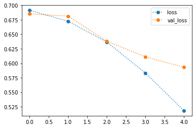
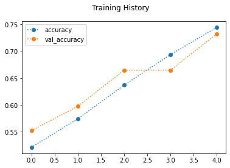
------------------------------------------------------------
------------------------------------------------------------
[i] Classification Report
precision recall f1-score support
0.0 0.74 0.58 0.65 800
1.0 0.66 0.80 0.72 800
accuracy 0.69 1600
macro avg 0.70 0.69 0.69 1600
weighted avg 0.70 0.69 0.69 1600
------------------------------------------------------------
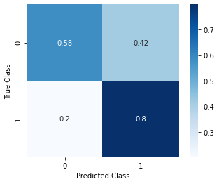
Keras Callbacks#
CallBacks You’ll Definitely Want to Use
keras.callbacks.ModelCheckpointkeras.callbacks.EarlyStoppingCallbacks worth further exploration
keras.callbacks.callbacks.LearningRateSchedulerkeras.callbacks
print_dir_contents('/gdrive/My Drive/Modeling')
CONTENTS OF FOLDER: '/gdrive/My Drive/Modeling':
cats_vs_dogs
chest_xrays
Adding callbacks#
MODEL_FPATH = r'/gdrive/My Drive/Modeling/cats_vs_dogs/'
os.makedirs(MODEL_FPATH,exist_ok=True)
print_dir_contents(MODEL_FPATH)
CONTENTS OF FOLDER: '/gdrive/My Drive/Modeling/cats_vs_dogs/':
CNN1_model.json
CNN1_weights.h5
example.hdf5
example_cnn.hdf
model.json
pretrained_cnn_model.hd5
pretrained_cnn_model.json
pretrained_cnn_model_weights.h5
weights-improvement-01-0.03.hdf5
weights-improvement-01-0.04.hdf5
weights-improvement-01-0.05.hdf5
weights-improvement-01-0.50.hdf5
weights-improvement-01-0.51.hdf5
weights-improvement-01-0.62.hdf5
weights-improvement-01-0.63.hdf5
weights-improvement-01-0.65.hdf5
weights-improvement-01-0.66.hdf5
weights-improvement-01-0.68.hdf5
weights-improvement-01-0.69.hdf5
weights-improvement-01-0.70.hdf5
weights-improvement-02-0.03.hdf5
weights-improvement-02-0.04.hdf5
weights-improvement-02-0.54.hdf5
weights-improvement-02-0.55.hdf5
weights-improvement-02-0.56.hdf5
weights-improvement-02-0.58.hdf5
weights-improvement-02-0.59.hdf5
weights-improvement-02-0.60.hdf5
weights-improvement-02-0.61.hdf5
weights-improvement-02-0.62.hdf5
weights-improvement-02-0.63.hdf5
weights-improvement-02-0.64.hdf5
weights-improvement-02-0.65.hdf5
weights-improvement-02-0.66.hdf5
weights-improvement-02-0.67.hdf5
weights-improvement-02-0.68.hdf5
weights-improvement-02-0.69.hdf5
weights-improvement-03-0.50.hdf5
weights-improvement-03-0.51.hdf5
weights-improvement-03-0.54.hdf5
weights-improvement-03-0.55.hdf5
weights-improvement-03-0.56.hdf5
weights-improvement-03-0.59.hdf5
weights-improvement-03-0.60.hdf5
weights-improvement-03-0.61.hdf5
weights-improvement-03-0.62.hdf5
weights-improvement-03-0.63.hdf5
weights-improvement-03-0.64.hdf5
weights-improvement-03-0.65.hdf5
weights-improvement-03-0.66.hdf5
weights-improvement-03-0.67.hdf5
weights-improvement-03-0.68.hdf5
weights-improvement-03-0.69.hdf5
weights-improvement-03-0.71.hdf5
weights-improvement-04-0.52.hdf5
weights-improvement-04-0.53.hdf5
weights-improvement-04-0.56.hdf5
weights-improvement-04-0.57.hdf5
weights-improvement-04-0.58.hdf5
weights-improvement-04-0.59.hdf5
weights-improvement-04-0.60.hdf5
weights-improvement-04-0.62.hdf5
weights-improvement-04-0.63.hdf5
weights-improvement-04-0.64.hdf5
weights-improvement-04-0.65.hdf5
weights-improvement-04-0.66.hdf5
weights-improvement-04-0.67.hdf5
weights-improvement-04-0.68.hdf5
weights-improvement-04-0.69.hdf5
weights-improvement-05-0.48.hdf5
weights-improvement-05-0.49.hdf5
weights-improvement-05-0.50.hdf5
weights-improvement-05-0.51.hdf5
weights-improvement-05-0.53.hdf5
weights-improvement-05-0.55.hdf5
weights-improvement-05-0.56.hdf5
weights-improvement-05-0.57.hdf5
weights-improvement-05-0.59.hdf5
weights-improvement-05-0.64.hdf5
weights-improvement-05-0.67.hdf5
weights-improvement-06-0.46.hdf5
weights-improvement-06-0.49.hdf5
weights-improvement-06-0.50.hdf5
weights-improvement-06-0.51.hdf5
weights-improvement-06-0.52.hdf5
weights-improvement-06-0.53.hdf5
weights-improvement-06-0.54.hdf5
weights-improvement-06-0.56.hdf5
weights-improvement-06-0.63.hdf5
weights-improvement-06-0.66.hdf5
weights-improvement-07-0.44.hdf5
weights-improvement-07-0.49.hdf5
weights-improvement-07-0.50.hdf5
weights-improvement-07-0.51.hdf5
weights-improvement-07-0.53.hdf5
weights-improvement-07-0.61.hdf5
weights-improvement-07-0.62.hdf5
weights-improvement-07-0.66.hdf5
weights-improvement-08-0.49.hdf5
weights-improvement-08-0.52.hdf5
weights-improvement-08-0.60.hdf5
weights-improvement-08-0.65.hdf5
weights-improvement-09-0.46.hdf5
weights-improvement-09-0.48.hdf5
weights-improvement-09-0.49.hdf5
weights-improvement-09-0.58.hdf5
weights-improvement-09-0.59.hdf5
weights-improvement-09-0.64.hdf5
weights-improvement-10-0.44.hdf5
weights-improvement-10-0.48.hdf5
weights-improvement-10-0.57.hdf5
weights-improvement-10-0.63.hdf5
weights-improvement-11-0.55.hdf5
weights-improvement-11-0.56.hdf5
weights-improvement-11-0.63.hdf5
weights-improvement-12-0.44.hdf5
weights-improvement-12-0.46.hdf5
weights-improvement-12-0.53.hdf5
weights-improvement-12-0.54.hdf5
weights-improvement-12-0.62.hdf5
weights-improvement-13-0.43.hdf5
weights-improvement-13-0.52.hdf5
weights-improvement-13-0.61.hdf5
weights-improvement-14-0.50.hdf5
weights-improvement-14-0.51.hdf5
weights-improvement-14-0.59.hdf5
weights-improvement-15-0.48.hdf5
weights-improvement-15-0.49.hdf5
weights-improvement-15-0.58.hdf5
weights-improvement-16-0.40.hdf5
weights-improvement-16-0.46.hdf5
weights-improvement-16-0.47.hdf5
weights-improvement-16-0.57.hdf5
weights-improvement-17-0.39.hdf5
weights-improvement-17-0.45.hdf5
weights-improvement-17-0.46.hdf5
weights-improvement-17-0.56.hdf5
weights-improvement-18-0.43.hdf5
weights-improvement-18-0.44.hdf5
weights-improvement-18-0.55.hdf5
weights-improvement-19-0.41.hdf5
weights-improvement-19-0.42.hdf5
weights-improvement-19-0.54.hdf5
weights-improvement-20-0.40.hdf5
weights-improvement-20-0.41.hdf5
weights-improvement-20-0.53.hdf5
weights-improvement-21-0.38.hdf5
weights-improvement-21-0.39.hdf5
weights-improvement-22-0.36.hdf5
weights-improvement-22-0.37.hdf5
weights-improvement-23-0.35.hdf5
weights-improvement-23-0.36.hdf5
weights-improvement-24-0.33.hdf5
weights-improvement-24-0.34.hdf5
weights-improvement-25-0.32.hdf5
weights-improvement-25-0.33.hdf5
weights-improvement-26-0.30.hdf5
weights-improvement-27-0.29.hdf5
weights-improvement-28-0.28.hdf5
weights-improvement-29-0.26.hdf5
weights-improvement-30-0.25.hdf5
weights-improvement-31-0.24.hdf5
weights-improvement-32-0.23.hdf5
weights-improvement-33-0.22.hdf5
weights-improvement-34-0.21.hdf5
weights-improvement-35-0.20.hdf5
weights-improvement-36-0.19.hdf5
weights-improvement-37-0.18.hdf5
weights-improvement-38-0.17.hdf5
weights-improvement-39-0.17.hdf5
weights-improvement-40-0.16.hdf5
weights-improvement-41-0.15.hdf5
weights-improvement-42-0.15.hdf5
weights-improvement-43-0.14.hdf5
weights-improvement-44-0.13.hdf5
weights-improvement-45-0.13.hdf5
weights-improvement-46-0.12.hdf5
weights-improvement-47-0.12.hdf5
weights-improvement-48-0.12.hdf5
weights-improvement-49-0.11.hdf5
weights-improvement-50-0.11.hdf5
# checkpoint
from tensorflow.keras.callbacks import ModelCheckpoint, EarlyStopping, CSVLogger
def create_checkpoint(monitor='val_accuracy',model_subfolder=MODEL_FPATH):
"""Creates a ModelCheckpoint callback
filepath = model_subfolder+ "weights-improvement-{epoch:02d}-{" + monitor + ":.2f}.hdf5"
"""
filepath=model_subfolder+"weights-improvement-{epoch:02d}-{"+monitor+":.2f}.hdf5"
checkpoint = ModelCheckpoint(filepath, monitor=monitor, verbose=1,
save_best_only=True, mode='auto')
return checkpoint
def create_early_stopping(monitor = 'val_accuracy',min_delta = 0.01, patience = 3,
verbose = 1, restore_best_weights = True):
"""Creates an EarlyStopping callback"""
args = locals()
return EarlyStopping(**args)
def create_csvlogger(filename):
return CSVLogger(filename, separator=',', append=False)
def get_callbacks(checkpoints=True, early_stopping=True, modeling_folder=MODEL_FPATH,
monitor_checkpoint='val_loss',monitor_stopping='val_loss',
min_delta = 0.01, patience = 3, verbose = 1, restore_best_weights = True):
"""Returns a list of callbacks containing ModelCheckpoint (if checkpoints==True),
EarlyStopping (if early_stopping==True)"""
callbacks = []
if checkpoints:
callbacks.append( create_checkpoint(monitor=monitor_checkpoint,
model_subfolder=modeling_folder))
if early_stopping:
callbacks.append( create_early_stopping(monitor=monitor_stopping, min_delta=min_delta,
patience=patience,verbose=verbose,
restore_best_weights=restore_best_weights))
return callbacks
get_callbacks()
[<tensorflow.python.keras.callbacks.ModelCheckpoint at 0x7fad0baed2d0>,
<tensorflow.python.keras.callbacks.EarlyStopping at 0x7fad0baedf10>]
Model 1 + Callbacks#
callbacks_list = get_callbacks(monitor_checkpoint='val_loss',
monitor_stopping='val_loss')
callbacks_list
[<tensorflow.python.keras.callbacks.ModelCheckpoint at 0x7fad0bd92850>,
<tensorflow.python.keras.callbacks.EarlyStopping at 0x7fad0bd36d50>]
cnn1,hist = make_fit_plot_model(make_cnn1,X_train,y_train,
X_test,y_test,epochs=20,
fit_kws=dict(callbacks=get_callbacks()))
------------------------------------------------------------
[i] MODEL CREATED AT 06/04/21 - 21:40:14 PM
------------------------------------------------------------
Model: "sequential_1"
_________________________________________________________________
Layer (type) Output Shape Param #
=================================================================
conv2d_3 (Conv2D) (None, 62, 62, 64) 1792
_________________________________________________________________
conv2d_4 (Conv2D) (None, 60, 60, 64) 36928
_________________________________________________________________
max_pooling2d_2 (MaxPooling2 (None, 30, 30, 64) 0
_________________________________________________________________
conv2d_5 (Conv2D) (None, 28, 28, 32) 18464
_________________________________________________________________
max_pooling2d_3 (MaxPooling2 (None, 14, 14, 32) 0
_________________________________________________________________
flatten_1 (Flatten) (None, 6272) 0
_________________________________________________________________
dense_2 (Dense) (None, 64) 401472
_________________________________________________________________
dense_3 (Dense) (None, 1) 65
=================================================================
Total params: 458,721
Trainable params: 458,721
Non-trainable params: 0
_________________________________________________________________
None
Epoch 1/20
250/250 [==============================] - 3s 9ms/step - loss: 0.6890 - accuracy: 0.5410 - val_loss: 0.6835 - val_accuracy: 0.5400
Epoch 00001: val_loss improved from inf to 0.68348, saving model to /gdrive/My Drive/Modeling/cats_vs_dogs/weights-improvement-01-0.68.hdf5
Epoch 2/20
250/250 [==============================] - 2s 8ms/step - loss: 0.6602 - accuracy: 0.6064 - val_loss: 0.6418 - val_accuracy: 0.6319
Epoch 00002: val_loss improved from 0.68348 to 0.64185, saving model to /gdrive/My Drive/Modeling/cats_vs_dogs/weights-improvement-02-0.64.hdf5
Epoch 3/20
250/250 [==============================] - 2s 8ms/step - loss: 0.6218 - accuracy: 0.6530 - val_loss: 0.6267 - val_accuracy: 0.6631
Epoch 00003: val_loss improved from 0.64185 to 0.62675, saving model to /gdrive/My Drive/Modeling/cats_vs_dogs/weights-improvement-03-0.63.hdf5
Epoch 4/20
250/250 [==============================] - 2s 8ms/step - loss: 0.5882 - accuracy: 0.6910 - val_loss: 0.6242 - val_accuracy: 0.6538
Epoch 00004: val_loss improved from 0.62675 to 0.62417, saving model to /gdrive/My Drive/Modeling/cats_vs_dogs/weights-improvement-04-0.62.hdf5
Epoch 5/20
250/250 [==============================] - 2s 8ms/step - loss: 0.5291 - accuracy: 0.7351 - val_loss: 0.5872 - val_accuracy: 0.6931
Epoch 00005: val_loss improved from 0.62417 to 0.58724, saving model to /gdrive/My Drive/Modeling/cats_vs_dogs/weights-improvement-05-0.59.hdf5
Epoch 6/20
250/250 [==============================] - 2s 8ms/step - loss: 0.4498 - accuracy: 0.7865 - val_loss: 0.5824 - val_accuracy: 0.7312
Epoch 00006: val_loss improved from 0.58724 to 0.58238, saving model to /gdrive/My Drive/Modeling/cats_vs_dogs/weights-improvement-06-0.58.hdf5
Epoch 7/20
250/250 [==============================] - 2s 8ms/step - loss: 0.3741 - accuracy: 0.8278 - val_loss: 0.6065 - val_accuracy: 0.7262
Epoch 00007: val_loss did not improve from 0.58238
Epoch 8/20
250/250 [==============================] - 2s 8ms/step - loss: 0.2767 - accuracy: 0.8811 - val_loss: 0.7231 - val_accuracy: 0.7006
Epoch 00008: val_loss did not improve from 0.58238
Restoring model weights from the end of the best epoch.
Epoch 00008: early stopping
[!] Training Completed AT 06/04/21 - 21:40:38 PM
[i] Total Training Time: 0:00:23.971861
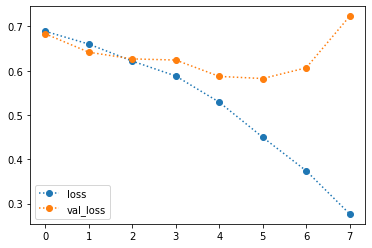
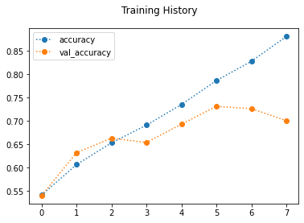
------------------------------------------------------------
------------------------------------------------------------
[i] Classification Report
precision recall f1-score support
0.0 0.79 0.53 0.63 800
1.0 0.65 0.86 0.74 800
accuracy 0.69 1600
macro avg 0.72 0.69 0.68 1600
weighted avg 0.72 0.69 0.68 1600
------------------------------------------------------------
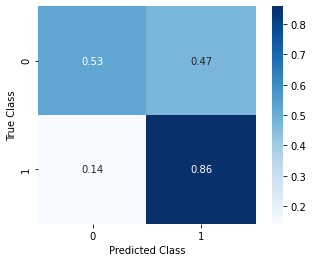
Model 3: Adding CNN from Student Capstone#
# def make_cnn_devin():
# model = models.Sequential()
# model.add(layers.Conv2D(32, (3, 3), activation='relu',
# input_shape=(*IMG_SIZE,3)))
# model.add(layers.MaxPooling2D((2, 2)))
# model.add(layers.Dropout(0.3))
# model.add(layers.Conv2D(64, (5, 5), activation='relu'))
# model.add(layers.MaxPooling2D((2, 2)))
# model.add(layers.Dropout(0.3))
# model.add(layers.Conv2D(128, (3, 3), activation='relu'))
# model.add(layers.MaxPooling2D((2, 2)))
# model.add(layers.Dropout(0.3))
# # model.add(layers.Conv2D(256, (3, 3), activation='relu'))
# # model.add(layers.MaxPooling2D((2, 2)))
# # model.add(layers.Dropout(0.3))
# model.add(layers.Flatten())
# model.add(layers.Dense(64, activation='relu'))
# # JMI
# model.add(layers.Dropout(0.2))
# model.add(layers.Dense(128, activation='relu'))
# # model.add(layers.Dense(256, activation='relu'))
# # model.add(layers.Dense(512, activation='relu'))
# model.add(layers.Dense(1, activation='sigmoid'))
# model.compile(loss='binary_crossentropy',
# optimizer="adam",
# metrics=['acc'])
# display(model.summary())
# return model
# cnn2,hist2 = make_fit_plot_model(make_cnn_devin,X_train,y_train,X_val,y_val,
# epochs=30,fit_kws=dict(
# callbacks=get_callbacks()
# ))
LIME#
Lime Resources#
Package Repo:
Blog Post:
Example:
class_lookup = {v:k for k,v in training_set.class_indices.items()}
class_lookup
{0: 'cats', 1: 'dogs'}
!pip install lime
Collecting lime
?25l Downloading https://files.pythonhosted.org/packages/f5/86/91a13127d83d793ecb50eb75e716f76e6eda809b6803c5a4ff462339789e/lime-0.2.0.1.tar.gz (275kB)
|████████████████████████████████| 276kB 5.3MB/s
?25hRequirement already satisfied: matplotlib in /usr/local/lib/python3.7/dist-packages (from lime) (3.2.2)
Requirement already satisfied: numpy in /usr/local/lib/python3.7/dist-packages (from lime) (1.19.5)
Requirement already satisfied: scipy in /usr/local/lib/python3.7/dist-packages (from lime) (1.4.1)
Requirement already satisfied: tqdm in /usr/local/lib/python3.7/dist-packages (from lime) (4.41.1)
Requirement already satisfied: scikit-learn>=0.18 in /usr/local/lib/python3.7/dist-packages (from lime) (0.22.2.post1)
Requirement already satisfied: scikit-image>=0.12 in /usr/local/lib/python3.7/dist-packages (from lime) (0.16.2)
Requirement already satisfied: kiwisolver>=1.0.1 in /usr/local/lib/python3.7/dist-packages (from matplotlib->lime) (1.3.1)
Requirement already satisfied: pyparsing!=2.0.4,!=2.1.2,!=2.1.6,>=2.0.1 in /usr/local/lib/python3.7/dist-packages (from matplotlib->lime) (2.4.7)
Requirement already satisfied: cycler>=0.10 in /usr/local/lib/python3.7/dist-packages (from matplotlib->lime) (0.10.0)
Requirement already satisfied: python-dateutil>=2.1 in /usr/local/lib/python3.7/dist-packages (from matplotlib->lime) (2.8.1)
Requirement already satisfied: joblib>=0.11 in /usr/local/lib/python3.7/dist-packages (from scikit-learn>=0.18->lime) (1.0.1)
Requirement already satisfied: networkx>=2.0 in /usr/local/lib/python3.7/dist-packages (from scikit-image>=0.12->lime) (2.5.1)
Requirement already satisfied: PyWavelets>=0.4.0 in /usr/local/lib/python3.7/dist-packages (from scikit-image>=0.12->lime) (1.1.1)
Requirement already satisfied: pillow>=4.3.0 in /usr/local/lib/python3.7/dist-packages (from scikit-image>=0.12->lime) (7.1.2)
Requirement already satisfied: imageio>=2.3.0 in /usr/local/lib/python3.7/dist-packages (from scikit-image>=0.12->lime) (2.4.1)
Requirement already satisfied: six in /usr/local/lib/python3.7/dist-packages (from cycler>=0.10->matplotlib->lime) (1.15.0)
Requirement already satisfied: decorator<5,>=4.3 in /usr/local/lib/python3.7/dist-packages (from networkx>=2.0->scikit-image>=0.12->lime) (4.4.2)
Building wheels for collected packages: lime
Building wheel for lime (setup.py) ... ?25l?25hdone
Created wheel for lime: filename=lime-0.2.0.1-cp37-none-any.whl size=283858 sha256=418e7601ab925fa518812398464c36d6aaf44b0c6a17220074cbdc14b40b68dc
Stored in directory: /root/.cache/pip/wheels/4c/4f/a5/0bc765457bd41378bf3ce8d17d7495369d6e7ca3b712c60c89
Successfully built lime
Installing collected packages: lime
Successfully installed lime-0.2.0.1
import lime
from lime import lime_image
from lime import lime_base
from lime.wrappers.scikit_image import SegmentationAlgorithm
from skimage.segmentation import mark_boundaries
lime_image.LimeImageExplainer
lime.lime_image.LimeImageExplainer
## Grabbing a random training image and label
i = np.random.choice(range(len(y_train)))
label = y_train[i]
img = X_train[i]
## Getting model prediction
pred = cnn1.predict(np.array([img]))
pred_class = int(pred.round())
## Printing the true class, predicted class, and show image
print(f"Image {i} = {class_lookup[int(label)]}")
print(f"- Model Predicted {class_lookup[pred_class]}")
array_to_img(img)
Image 7416 = dogs
- Model Predicted dogs
## Make an explainer
explainer = lime_image.LimeImageExplainer()
explanation = explainer.explain_instance(img, cnn1.predict, top_labels=2,
hide_color=None, num_samples=2000)
temp, mask = explanation.get_image_and_mask(explanation.top_labels[0],
positive_only=False,
num_features=5)
# hide_rest=True)
plt.imshow(mark_boundaries(temp / 2 + 0.5, mask))
<matplotlib.image.AxesImage at 0x7fac17bd3e90>
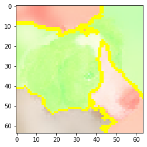
Transfer Learning#
https://www.kaggle.com/risingdeveloper/transfer-learning-in-keras-on-dogs-vs-cats
Pretrained networks have already been trained on large pools of data, and have their weights frozen.
They enable deep learning on fairly small image datasets
a ‘small’ dataset is less than tens of thousands or hundreds of thousands of images
Pretrained networks can be used in whole or only specific parts, depending on your need/data.
The shallower the layer of neurons, the more generic its features are.
Therefore even if you data is very different, you can still use the lower layers for basic feature extraction.
The deeper the layer, the more abstract its features are.
so you may want to unfreeze the deeper/higher order classificaiton layers and re-train the network on your images.
Where to find the pre-trained networks#
Pretrained Networks are available in Keras.applications
This list of pretained models are for image classification.
DenseNet
InceptionResNetV2
InceptionV3
MobileNet
NASNet
ResNet50
VGG16
VGG19 - used in labs
Xception
You can import these networks and use it as a function with 2 arguments:
weightsDetermines which data source’s training data weights to use.
ex: `weights=’imagenet’
include_topdetermines whetehr or not to include the fully-connected layer at the top of the network
from keras.applications import MobileNet
conv_base = MobileNet(weights='imagenet', include_top=True)
How to use pretrained networks for feature extraction or for fine-tuning#
You’ll learn about two ways to use pre-trained networks:
Feature extraction: here, you use the representations learned by a previous network to extract interesting features from new samples.
Method 1) Use the convolutional base layers and run your data to detect the basic features, and save the output data, which is then run a new dense classifier, which is trained from scratch.
(+) It is fast
(-) but cant use data augmentation.
Note: If your images are very different from the pretraining datasets, you may want to only use part of the convolutional base but a new densely connected classifier
Method 2) Extend the conv_base by adding dense layers on top, running everything together.
(+) allows for data sugmentation
(-) extremely time-consuming and requires GPU
Fine-tuning: when finetuning, you’ll “unfreeze” a few top layers from the convolutional base of the model and train them again together with the densely connected classifier layers of the model.
Note that you are changing the parts of the convolutional layers here that were used to detect the more abstract features.
By doing this, you can make your model more relevant for the classification problem at hand.
Additional Resources#
https://www.dlology.com/blog/gentle-guide-on-how-yolo-object-localization-works-with-keras/
https://www.dlology.com/blog/gentle-guide-on-how-yolo-object-localization-works-with-keras-part-2/
from tensorflow.keras.applications import MobileNet
conv_base = MobileNet(weights='imagenet',
include_top = True)
conv_base.summary()
Downloading data from https://storage.googleapis.com/tensorflow/keras-applications/mobilenet/mobilenet_1_0_224_tf.h5
17227776/17225924 [==============================] - 0s 0us/step
Model: "mobilenet_1.00_224"
_________________________________________________________________
Layer (type) Output Shape Param #
=================================================================
input_1 (InputLayer) [(None, 224, 224, 3)] 0
_________________________________________________________________
conv1 (Conv2D) (None, 112, 112, 32) 864
_________________________________________________________________
conv1_bn (BatchNormalization (None, 112, 112, 32) 128
_________________________________________________________________
conv1_relu (ReLU) (None, 112, 112, 32) 0
_________________________________________________________________
conv_dw_1 (DepthwiseConv2D) (None, 112, 112, 32) 288
_________________________________________________________________
conv_dw_1_bn (BatchNormaliza (None, 112, 112, 32) 128
_________________________________________________________________
conv_dw_1_relu (ReLU) (None, 112, 112, 32) 0
_________________________________________________________________
conv_pw_1 (Conv2D) (None, 112, 112, 64) 2048
_________________________________________________________________
conv_pw_1_bn (BatchNormaliza (None, 112, 112, 64) 256
_________________________________________________________________
conv_pw_1_relu (ReLU) (None, 112, 112, 64) 0
_________________________________________________________________
conv_pad_2 (ZeroPadding2D) (None, 113, 113, 64) 0
_________________________________________________________________
conv_dw_2 (DepthwiseConv2D) (None, 56, 56, 64) 576
_________________________________________________________________
conv_dw_2_bn (BatchNormaliza (None, 56, 56, 64) 256
_________________________________________________________________
conv_dw_2_relu (ReLU) (None, 56, 56, 64) 0
_________________________________________________________________
conv_pw_2 (Conv2D) (None, 56, 56, 128) 8192
_________________________________________________________________
conv_pw_2_bn (BatchNormaliza (None, 56, 56, 128) 512
_________________________________________________________________
conv_pw_2_relu (ReLU) (None, 56, 56, 128) 0
_________________________________________________________________
conv_dw_3 (DepthwiseConv2D) (None, 56, 56, 128) 1152
_________________________________________________________________
conv_dw_3_bn (BatchNormaliza (None, 56, 56, 128) 512
_________________________________________________________________
conv_dw_3_relu (ReLU) (None, 56, 56, 128) 0
_________________________________________________________________
conv_pw_3 (Conv2D) (None, 56, 56, 128) 16384
_________________________________________________________________
conv_pw_3_bn (BatchNormaliza (None, 56, 56, 128) 512
_________________________________________________________________
conv_pw_3_relu (ReLU) (None, 56, 56, 128) 0
_________________________________________________________________
conv_pad_4 (ZeroPadding2D) (None, 57, 57, 128) 0
_________________________________________________________________
conv_dw_4 (DepthwiseConv2D) (None, 28, 28, 128) 1152
_________________________________________________________________
conv_dw_4_bn (BatchNormaliza (None, 28, 28, 128) 512
_________________________________________________________________
conv_dw_4_relu (ReLU) (None, 28, 28, 128) 0
_________________________________________________________________
conv_pw_4 (Conv2D) (None, 28, 28, 256) 32768
_________________________________________________________________
conv_pw_4_bn (BatchNormaliza (None, 28, 28, 256) 1024
_________________________________________________________________
conv_pw_4_relu (ReLU) (None, 28, 28, 256) 0
_________________________________________________________________
conv_dw_5 (DepthwiseConv2D) (None, 28, 28, 256) 2304
_________________________________________________________________
conv_dw_5_bn (BatchNormaliza (None, 28, 28, 256) 1024
_________________________________________________________________
conv_dw_5_relu (ReLU) (None, 28, 28, 256) 0
_________________________________________________________________
conv_pw_5 (Conv2D) (None, 28, 28, 256) 65536
_________________________________________________________________
conv_pw_5_bn (BatchNormaliza (None, 28, 28, 256) 1024
_________________________________________________________________
conv_pw_5_relu (ReLU) (None, 28, 28, 256) 0
_________________________________________________________________
conv_pad_6 (ZeroPadding2D) (None, 29, 29, 256) 0
_________________________________________________________________
conv_dw_6 (DepthwiseConv2D) (None, 14, 14, 256) 2304
_________________________________________________________________
conv_dw_6_bn (BatchNormaliza (None, 14, 14, 256) 1024
_________________________________________________________________
conv_dw_6_relu (ReLU) (None, 14, 14, 256) 0
_________________________________________________________________
conv_pw_6 (Conv2D) (None, 14, 14, 512) 131072
_________________________________________________________________
conv_pw_6_bn (BatchNormaliza (None, 14, 14, 512) 2048
_________________________________________________________________
conv_pw_6_relu (ReLU) (None, 14, 14, 512) 0
_________________________________________________________________
conv_dw_7 (DepthwiseConv2D) (None, 14, 14, 512) 4608
_________________________________________________________________
conv_dw_7_bn (BatchNormaliza (None, 14, 14, 512) 2048
_________________________________________________________________
conv_dw_7_relu (ReLU) (None, 14, 14, 512) 0
_________________________________________________________________
conv_pw_7 (Conv2D) (None, 14, 14, 512) 262144
_________________________________________________________________
conv_pw_7_bn (BatchNormaliza (None, 14, 14, 512) 2048
_________________________________________________________________
conv_pw_7_relu (ReLU) (None, 14, 14, 512) 0
_________________________________________________________________
conv_dw_8 (DepthwiseConv2D) (None, 14, 14, 512) 4608
_________________________________________________________________
conv_dw_8_bn (BatchNormaliza (None, 14, 14, 512) 2048
_________________________________________________________________
conv_dw_8_relu (ReLU) (None, 14, 14, 512) 0
_________________________________________________________________
conv_pw_8 (Conv2D) (None, 14, 14, 512) 262144
_________________________________________________________________
conv_pw_8_bn (BatchNormaliza (None, 14, 14, 512) 2048
_________________________________________________________________
conv_pw_8_relu (ReLU) (None, 14, 14, 512) 0
_________________________________________________________________
conv_dw_9 (DepthwiseConv2D) (None, 14, 14, 512) 4608
_________________________________________________________________
conv_dw_9_bn (BatchNormaliza (None, 14, 14, 512) 2048
_________________________________________________________________
conv_dw_9_relu (ReLU) (None, 14, 14, 512) 0
_________________________________________________________________
conv_pw_9 (Conv2D) (None, 14, 14, 512) 262144
_________________________________________________________________
conv_pw_9_bn (BatchNormaliza (None, 14, 14, 512) 2048
_________________________________________________________________
conv_pw_9_relu (ReLU) (None, 14, 14, 512) 0
_________________________________________________________________
conv_dw_10 (DepthwiseConv2D) (None, 14, 14, 512) 4608
_________________________________________________________________
conv_dw_10_bn (BatchNormaliz (None, 14, 14, 512) 2048
_________________________________________________________________
conv_dw_10_relu (ReLU) (None, 14, 14, 512) 0
_________________________________________________________________
conv_pw_10 (Conv2D) (None, 14, 14, 512) 262144
_________________________________________________________________
conv_pw_10_bn (BatchNormaliz (None, 14, 14, 512) 2048
_________________________________________________________________
conv_pw_10_relu (ReLU) (None, 14, 14, 512) 0
_________________________________________________________________
conv_dw_11 (DepthwiseConv2D) (None, 14, 14, 512) 4608
_________________________________________________________________
conv_dw_11_bn (BatchNormaliz (None, 14, 14, 512) 2048
_________________________________________________________________
conv_dw_11_relu (ReLU) (None, 14, 14, 512) 0
_________________________________________________________________
conv_pw_11 (Conv2D) (None, 14, 14, 512) 262144
_________________________________________________________________
conv_pw_11_bn (BatchNormaliz (None, 14, 14, 512) 2048
_________________________________________________________________
conv_pw_11_relu (ReLU) (None, 14, 14, 512) 0
_________________________________________________________________
conv_pad_12 (ZeroPadding2D) (None, 15, 15, 512) 0
_________________________________________________________________
conv_dw_12 (DepthwiseConv2D) (None, 7, 7, 512) 4608
_________________________________________________________________
conv_dw_12_bn (BatchNormaliz (None, 7, 7, 512) 2048
_________________________________________________________________
conv_dw_12_relu (ReLU) (None, 7, 7, 512) 0
_________________________________________________________________
conv_pw_12 (Conv2D) (None, 7, 7, 1024) 524288
_________________________________________________________________
conv_pw_12_bn (BatchNormaliz (None, 7, 7, 1024) 4096
_________________________________________________________________
conv_pw_12_relu (ReLU) (None, 7, 7, 1024) 0
_________________________________________________________________
conv_dw_13 (DepthwiseConv2D) (None, 7, 7, 1024) 9216
_________________________________________________________________
conv_dw_13_bn (BatchNormaliz (None, 7, 7, 1024) 4096
_________________________________________________________________
conv_dw_13_relu (ReLU) (None, 7, 7, 1024) 0
_________________________________________________________________
conv_pw_13 (Conv2D) (None, 7, 7, 1024) 1048576
_________________________________________________________________
conv_pw_13_bn (BatchNormaliz (None, 7, 7, 1024) 4096
_________________________________________________________________
conv_pw_13_relu (ReLU) (None, 7, 7, 1024) 0
_________________________________________________________________
global_average_pooling2d (Gl (None, 1024) 0
_________________________________________________________________
reshape_1 (Reshape) (None, 1, 1, 1024) 0
_________________________________________________________________
dropout (Dropout) (None, 1, 1, 1024) 0
_________________________________________________________________
conv_preds (Conv2D) (None, 1, 1, 1000) 1025000
_________________________________________________________________
reshape_2 (Reshape) (None, 1000) 0
_________________________________________________________________
predictions (Activation) (None, 1000) 0
=================================================================
Total params: 4,253,864
Trainable params: 4,231,976
Non-trainable params: 21,888
_________________________________________________________________
## Making a Sequential model on top of the conv_base
model = models.Sequential()
conv_base = MobileNet(input_shape=(*IMG_SIZE,3),weights='imagenet',
include_top = False)
model.add(conv_base)
model.add(layers.Flatten())
model.add(layers.Dense(32, activation='relu'))#256
model.add(layers.Dense(1, activation='sigmoid')) #Sigmoid function at the end because we have just two classes
WARNING:tensorflow:`input_shape` is undefined or non-square, or `rows` is not in [128, 160, 192, 224]. Weights for input shape (224, 224) will be loaded as the default.
Downloading data from https://storage.googleapis.com/tensorflow/keras-applications/mobilenet/mobilenet_1_0_224_tf_no_top.h5
17227776/17225924 [==============================] - 0s 0us/step
print('Number of trainable weights before freezing the conv base:', len(model.trainable_weights))
conv_base.trainable = False
print('Number of trainable weights after freezing the conv base:', len(model.trainable_weights))
Number of trainable weights before freezing the conv base: 85
Number of trainable weights after freezing the conv base: 4
from tensorflow.keras import layers
from tensorflow.keras import models
from tensorflow.keras import optimizers
def make_transfer_learning():
model = models.Sequential()
conv_base = MobileNet(weights='imagenet',input_shape=(*IMG_SIZE,3),
include_top = False)
conv_base.trainable = False
model.add(conv_base)
model.add(layers.Flatten())
model.add(layers.Dense(64, activation='relu'))#256
model.add(layers.Dense(1, activation='sigmoid')) #Sigmoid function at the end because we have just two classes
model.compile(loss='binary_crossentropy', optimizer=optimizers.RMSprop(lr=2e-5), metrics=['accuracy'])
return model
cnn_transfer,hist_transfer = make_fit_plot_model(make_transfer_learning,X_train,y_train,
X_test,y_test,epochs=25,
fit_kws=dict(callbacks=get_callbacks()))
------------------------------------------------------------
[i] MODEL CREATED AT 06/04/21 - 21:43:42 PM
------------------------------------------------------------
WARNING:tensorflow:`input_shape` is undefined or non-square, or `rows` is not in [128, 160, 192, 224]. Weights for input shape (224, 224) will be loaded as the default.
/usr/local/lib/python3.7/dist-packages/tensorflow/python/keras/optimizer_v2/optimizer_v2.py:375: UserWarning: The `lr` argument is deprecated, use `learning_rate` instead.
"The `lr` argument is deprecated, use `learning_rate` instead.")
Epoch 1/25
250/250 [==============================] - 4s 10ms/step - loss: 0.5958 - accuracy: 0.6995 - val_loss: 0.4525 - val_accuracy: 0.7987
Epoch 00001: val_loss improved from inf to 0.45245, saving model to /gdrive/My Drive/Modeling/cats_vs_dogs/weights-improvement-01-0.45.hdf5
Epoch 2/25
250/250 [==============================] - 2s 8ms/step - loss: 0.4212 - accuracy: 0.8008 - val_loss: 0.4103 - val_accuracy: 0.8094
Epoch 00002: val_loss improved from 0.45245 to 0.41028, saving model to /gdrive/My Drive/Modeling/cats_vs_dogs/weights-improvement-02-0.41.hdf5
Epoch 3/25
250/250 [==============================] - 2s 8ms/step - loss: 0.3708 - accuracy: 0.8306 - val_loss: 0.3912 - val_accuracy: 0.8281
Epoch 00003: val_loss improved from 0.41028 to 0.39124, saving model to /gdrive/My Drive/Modeling/cats_vs_dogs/weights-improvement-03-0.39.hdf5
Epoch 4/25
250/250 [==============================] - 2s 8ms/step - loss: 0.3371 - accuracy: 0.8495 - val_loss: 0.3809 - val_accuracy: 0.8344
Epoch 00004: val_loss improved from 0.39124 to 0.38087, saving model to /gdrive/My Drive/Modeling/cats_vs_dogs/weights-improvement-04-0.38.hdf5
Epoch 5/25
250/250 [==============================] - 2s 8ms/step - loss: 0.3094 - accuracy: 0.8660 - val_loss: 0.3746 - val_accuracy: 0.8400
Epoch 00005: val_loss improved from 0.38087 to 0.37460, saving model to /gdrive/My Drive/Modeling/cats_vs_dogs/weights-improvement-05-0.37.hdf5
Epoch 6/25
250/250 [==============================] - 2s 8ms/step - loss: 0.2866 - accuracy: 0.8764 - val_loss: 0.3700 - val_accuracy: 0.8413
Epoch 00006: val_loss improved from 0.37460 to 0.37003, saving model to /gdrive/My Drive/Modeling/cats_vs_dogs/weights-improvement-06-0.37.hdf5
Epoch 7/25
250/250 [==============================] - 2s 8ms/step - loss: 0.2669 - accuracy: 0.8869 - val_loss: 0.3655 - val_accuracy: 0.8394
Epoch 00007: val_loss improved from 0.37003 to 0.36551, saving model to /gdrive/My Drive/Modeling/cats_vs_dogs/weights-improvement-07-0.37.hdf5
Epoch 8/25
250/250 [==============================] - 2s 8ms/step - loss: 0.2500 - accuracy: 0.8967 - val_loss: 0.3690 - val_accuracy: 0.8413
Epoch 00008: val_loss did not improve from 0.36551
Epoch 9/25
250/250 [==============================] - 2s 8ms/step - loss: 0.2344 - accuracy: 0.9056 - val_loss: 0.3661 - val_accuracy: 0.8456
Epoch 00009: val_loss did not improve from 0.36551
Restoring model weights from the end of the best epoch.
Epoch 00009: early stopping
[!] Training Completed AT 06/04/21 - 21:44:05 PM
[i] Total Training Time: 0:00:23.478029
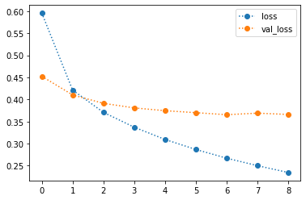
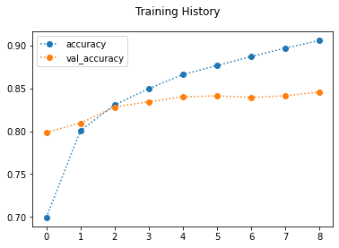
------------------------------------------------------------
------------------------------------------------------------
[i] Classification Report
precision recall f1-score support
0.0 0.84 0.84 0.84 800
1.0 0.84 0.84 0.84 800
accuracy 0.84 1600
macro avg 0.84 0.84 0.84 1600
weighted avg 0.84 0.84 0.84 1600
------------------------------------------------------------
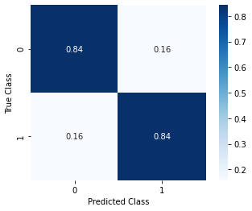
SAVING AND LOADING MODELS#
# ## SAVING THE FULL MODEL
cnn_fpath = MODEL_FPATH+'pretrained_cnn_model.hd5'
cnn_fpath
'/gdrive/My Drive/Modeling/cats_vs_dogs/pretrained_cnn_model.hd5'
## Saving the model
cnn_transfer.save(cnn_fpath)#MODEL_FPATH+'pretrained_cnn_model.hd5')
WARNING:absl:Function `_wrapped_model` contains input name(s) mobilenet_1.00_224_input with unsupported characters which will be renamed to mobilenet_1_00_224_input in the SavedModel.
INFO:tensorflow:Assets written to: /gdrive/My Drive/Modeling/cats_vs_dogs/pretrained_cnn_model.hd5/assets
INFO:tensorflow:Assets written to: /gdrive/My Drive/Modeling/cats_vs_dogs/pretrained_cnn_model.hd5/assets
from tensorflow.keras.models import load_model
cnn_loaded = load_model(cnn_fpath)#MODEL_FPATH+'pretrained_cnn_model.hdf')
y_hat_test_loaded = cnn_loaded.predict(X_test)
y_hat_test_loaded
array([[0.02757827],
[0.96034986],
[0.41734257],
...,
[0.23932709],
[0.01479258],
[0.00474696]], dtype=float32)
evaluate_model(cnn_loaded,None,X_test,y_test)
------------------------------------------------------------
------------------------------------------------------------
[i] Classification Report
precision recall f1-score support
0.0 0.84 0.84 0.84 800
1.0 0.84 0.84 0.84 800
accuracy 0.84 1600
macro avg 0.84 0.84 0.84 1600
weighted avg 0.84 0.84 0.84 1600
------------------------------------------------------------
# ## Saving the Model Weights
model_name = 'pretrained_cnn_model'
weights_fname = MODEL_FPATH + f"{model_name}_weights.h5"
## Save Weights
cnn_transfer.save_weights(weights_fname)
## SAVING THE NETWORK ARCHITECTURE AS JSON
cnn_json = cnn_transfer.to_json()
print(cnn_json[:100])
## Save json var to file
json_fpath=f"{MODEL_FPATH}{model_name}.json"
with open(json_fpath,'w') as f:
f.write(cnn_json)
{"class_name": "Sequential", "config": {"name": "sequential_6", "layers": [{"class_name": "InputLaye
from tensorflow.keras.models import model_from_json
# Model reconstruction from JSON file
with open(json_fpath, 'r',encoding="utf8") as f:
model_json = model_from_json(f.read())
print(model_json.summary())
# # Load weights into the new model
model_json.load_weights(weights_fname)
evaluate_model(model_json,None,X_test,y_test)
Model: "sequential_6"
_________________________________________________________________
Layer (type) Output Shape Param #
=================================================================
mobilenet_1.00_224 (Function (None, 2, 2, 1024) 3228864
_________________________________________________________________
flatten_5 (Flatten) (None, 4096) 0
_________________________________________________________________
dense_10 (Dense) (None, 64) 262208
_________________________________________________________________
dense_11 (Dense) (None, 1) 65
=================================================================
Total params: 3,491,137
Trainable params: 262,273
Non-trainable params: 3,228,864
_________________________________________________________________
None
------------------------------------------------------------
------------------------------------------------------------
[i] Classification Report
precision recall f1-score support
0.0 0.84 0.84 0.84 800
1.0 0.84 0.84 0.84 800
accuracy 0.84 1600
macro avg 0.84 0.84 0.84 1600
weighted avg 0.84 0.84 0.84 1600
------------------------------------------------------------
Lime with Transfer Learning Model#
class_lookup = {v:k for k,v in training_set.class_indices.items()}
class_lookup
{0: 'cats', 1: 'dogs'}
## Grabbing a random training image and label
i = np.random.choice(range(len(y_train)))
label = y_train[i]
img = X_train[i]
## Getting model prediction
pred = cnn_loaded.predict(np.array([img]))
pred_class = int(pred.round())
## Printing the true class, predicted class, and show image
print(f"Image {i} = {class_lookup[int(label)]}")
print(f"- Model Predicted {class_lookup[pred_class]}")
array_to_img(img)
Image 3240 = cats
- Model Predicted cats
## Make an explainer
explainer = lime_image.LimeImageExplainer()
explanation = explainer.explain_instance(img, cnn_loaded.predict, top_labels=2,
hide_color=None, num_samples=2000)
temp, mask = explanation.get_image_and_mask(explanation.top_labels[0],
positive_only=False,
num_features=5)
# hide_rest=True)
plt.imshow(mark_boundaries(temp / 2 + 0.5, mask))
<matplotlib.image.AxesImage at 0x7faa43e93dd0>
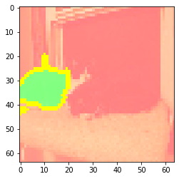